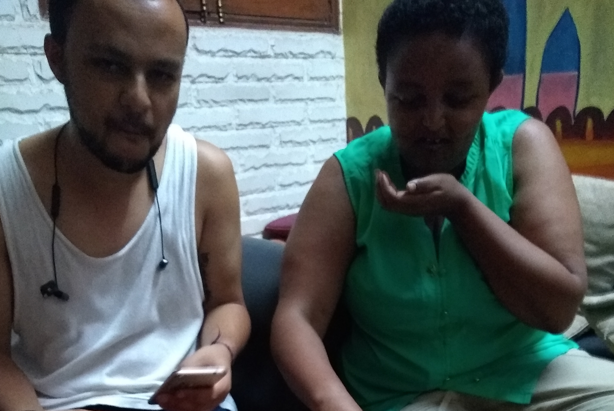

Please contact me with better ideas for a name!
Solomon is a chef back home, and came with some teff for exactly this occasion. teff is a common grain in Ethiopia, with which is us to make this sort of bubbly pita. He then broke the pita, and cooked chunks of it into this sour-spicy combo. Very tastey.
He and Hanna just finished their first of five Vipassana meditation retreats they'll do while in the country. Vipassana is a meditation practice revolving around "mindfulness." The retreats entail varying degrees of isolation/bans on communication of any sort. Business idea: Vipassana retreats for high powered executives-- they pay thousands and you just give em a bed and some rice. Call it "Scarcity Meditation" or something.